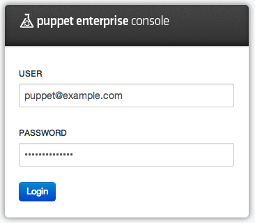
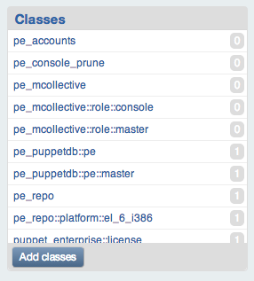
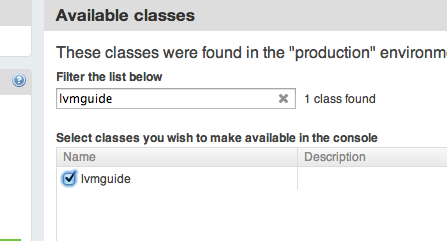
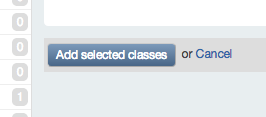
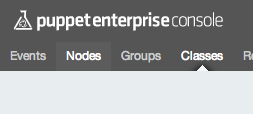
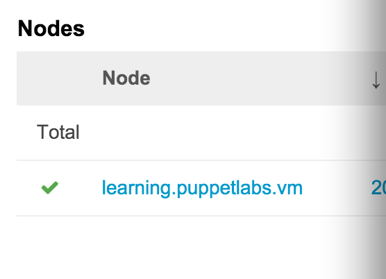
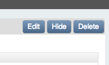
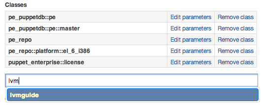
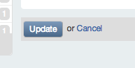

The Power of Puppet
Prerequisites
- Welcome Quest
Quest Objectives
- Using existing Puppet modules, configure the Learning VM to serve a web version of the Quest Guide.
- Learn how the Puppet Enterprise (PE) Console's node classifier can manage the Learning VM's configuration.
Getting Started
In this quest you will use the Puppet Enterprise (PE) Console in conjunction with existing modules to cut away much of the complexity of a common configuration task. You'll configure the Learning VM to serve the content of this Quest Guide as a locally accessible static HTML website. We'll show you how you can Puppet and freely available Puppet modules to fully automate the process instead of writing code or using standard terminal commands.
As you go through this quest, remember that while Puppet can simplify many tasks, it's a powerful and complex tool. There's a lot to learn if you want to use it to its full potential. We will explain concepts as needed to complete and understand each task in this quest, but sometimes we'll hold off on a fuller explanation of some detail until a later quest. Don't worry if you don't feel like you're getting the whole story right away; keep at it and we'll get there when the time is right!
When you're ready to get started, type the following command:
quest --start power
Forging Ahead
A module is a bundle of Puppet code packaged along with the other files and data you need manage some aspect of a system. Need to set up NTP? There's a module for that. Manage system users? That too. But likely you'll want to do both of these things and more. Modules let you mix and match reusable bits of Puppet code to make achieving your desired configuration as painless as possible. Modules are designed to be, well, modular.
But where do these modules come from? The Puppet Forge is a public repository of modules contributed by members of the Puppet community, including many written and maintained by Puppet Labs employees and partners. The Forge also includes a list PE Supported Modules, which Puppet Labs has rigorously tested and is committed to supporting and maintaining through their lifecycle.
Task 1 :
To get started setting up the Quest Guide website, you'll need to download and install Puppet Labs' Apache module from the Forge. (If you're offline or behind a firewall, check the aside below for instructions on using the cached version of the module.)
The apache module gives you everything you need to automate installing, configuring, and starting an Apache webserver. In your terminal, enter the following command to install the module:
puppet module install puppetlabs-apache
Offline?
If you don't have internet access, run the following terminal commands to used a cached version of the module:
puppet module install /usr/src/forge/puppetlabs-apache-*.tar.gz --ignore-dependencies
This command tells Puppet to download the Puppet Labs apache module from the Forge and place it in the directory specified as Puppet's modulepath. The modulepath defines the directory on your Puppet Master where Puppet saves modules you install and accesses modules you already have installed. For Puppet Enterprise, this defaults to /etc/puppetlabs/puppet/modules/.
Great job! You've just installed your first module from the Forge.
To help set up the Quest Guide website, we've also prepared an lvmguide module. It's already in the VM's module path, so there's no need to fetch it from the Forge. This small lvmguide module draws on some resources from the Apache module and uses some code and content of its own to finish the configuration of the Quest Guide website.
The lvmguide and Apache modules
Before using these modules, you should know a little more about how they work.
The lvmguide module includes Puppet code that defines an lvmguide class. In Puppet, a class is simply a named block of Puppet code organized in a way that defines a set of associated system resources. A class might install a package, customize an associated configuration file for that package, and start a service provided by that package. These are related and interdependent processes, so it makes sense to organize them into a single configurable unit: a class.
Despite some superficial similarities, Puppet's classes aren't like the classes in Object Oriented programming. You'll just get confused if you think of them this way!
While a module can include many classes, it will always have a main class that shares the name of the module. This class serves as the access point for the module's functionality and calls on other classes within the module or from pre-requisite modules as needed.
Put your Modules to Use
In order to configure the Learning VM to serve you the Quest Guide website, you'll need to classify it with the lvmguide class. Classification tells Puppet which classes to apply to which machines in your infrastructure. Though there are a few different ways to classify nodes, we'll be using the PE Console's node classifier for this quest.
To access the PE Console you'll need the Learning VM's IP address. Remember, you can use the facter tool packaged with PE.
facter ipaddress
You can see a list of all the system facts accessible through facter by running the `facter -p` command.
Open a web browser on your host machine and go to https://<ip-address>, where <ip-address> is the Learning VM's IP address. (Be sure to include the s in https)
If your browser gives you a security notice because the certificate is self-signed, go ahead and click accept to continue to the PE Console.
When prompted, use the following credentials to log in:
Username: puppet@example.com
Password: learningpuppet

Figure
You're in! Now that you have access to the PE Console, we'll go over the steps you'll take to classify the "learning.puppetlabs.vm" node (i.e. the Learning VM) with the lvmguide class.
Add a Class
First, you need to add the lvmguide class to the list of classes available to the PE Console.
To do this, click the Add classes button on the Classes panel. (You may need to scroll to the bottom of the page to find the panel.)

Figure
Type lvmguide in the "Filter the list below" input box, and check the checkbox by the lvmguide class that appears in the list.

Figure
Now click the "Add selected classes" button.

Figure
You should see a verification message at the top of the PE Console and the the lvmguide class will appear in the list of available classes on the left side of the console interface.
Classify a Node
Now that the lvmguide class is available, you can use it to classify the node learning.puppetlabs.vm.
Click on the "Nodes" menu item in the navigation menu. (You may need to scroll to the top of the page to see the navigation menu.)

Figure
Click on the learning.puppetlabs.vm node hyperlink. (This should be the only one listed since the Learning VM is the only node you're managing with Puppet Enterprise.)

Figure
Once you're on the node page for learning.puppetlabs.vm, click the "Edit" button located in the top-right corner of the screen.

Figure
In the Classes section, type lvmguide in the "add a class" input box

Figure
Click the "Update" button at the bottom.

Figure
Excellent! If everything went according to plan, you've successfully classified the learning.puppetlabs.vm node with the lvmguide class.
Run Puppet
Now that you have classified the learning.puppetlabs.vm node with the lvmguide class, Puppet knows how the system should be configured. But it won't make any changes until a Puppet run occurs.
The Puppet agent daemon runs in the background on any nodes you manage with Puppet. Every 30 minutes, the Puppet agent daemon requests a catalog from the Puppet Master. The Puppet Master parses all the classes applied to that node and builds the catalog to describes how the node is supposed to be configured. It returns this catalog to the node's Puppet agent, which then applies any changes necessary to bring the node into the line with the state described by the catalog.
Task 3 :
Instead of waiting for the Puppet agent to make its scheduled run, use the puppet agent tool to trigger one yourself. In your terminal, type the following command:
puppet agent --test
Please note this may take about a minute to run. This is about the time it takes for the software packages to be downloaded and installed as needed. After a brief delay, you will see text scroll by in your terminal indicating that Puppet has made all the specified changes to the Learning VM.
Check out the Quest Guide! In your browsers address bar, type the following URL: http://<ip-address>. Though the IP address is the same, using https will load the PE Console, while http will load the Quest Guide as a website.
From this point on you can either follow along with the website or with the PDF, whichever works best for you.
IP Troubleshooting
The website for the quest guide will remain accessible for as long as the VM's IP address remains the same. If you move your computer or laptop to a different network, or if you suspend your laptop and resumed work on the Learning VM after a while, the website may not be accessible.
In case any of the above issues happen, and you end up with a stale IP address, run the following commands on the Learning VM to get a new IP address. (Remember, if you're ever unable to establish an SSH session, you can log in directly through the interface of your virtualization software.)
Refresh your DHCP lease:
service network restart
Find your IP address:
facter ipaddress
Explore the lvmguide Class
To understand how the lvmguide class works, you can take a look under the hood. In your terminal, use the cd command to navigate to the module directory. (Remember, cd for 'change directory.')
cd /etc/puppetlabs/puppet/modules
Next, open the init.pp manifest.
nano lvmguide/manifests/init.pp
class lvmguide (
$document_root = '/var/www/html/lvmguide',
$port = '80',
) {
# Manage apache, the files for the website will be
# managed by the quest tool
class { 'apache':
default_vhost => false,
}
apache::vhost { 'learning.puppetlabs.vm':
port => $port,
docroot => $document_root,
}
}
(To exit out of the file, use the command control-x in nano, or :q! in vim.)
Don't worry about understanding each detail of the syntax just yet. For now, we'll just give you a quick overview so the concepts won't be totally new when you encounter them later on.
Class Title and Parameters:
class lvmguide (
$document_root = '/var/www/html/lvmguide',
$port = '80',
) {
The class lvmguide takes two parameters: $document_root and $port. The default values are set as /var/www/html/lvmguide and 80.
Include the apache module's apache class:
class { 'apache':
default_vhost => false,
}
The lvmguide class declares another class: apache. Puppet knows about the apache class because it is defined by the apache module you installed earlier. The default_vhost parameter for the apache class is set to false. This is all the equivalent of saying "Set up Apache, and don't use the default VirtualHost because I want to specify my own."
Include the apache module's vhost class:
apache::vhost { 'learning.puppetlabs.vm':
port => $port,
docroot => $document_root,
}
This block of code declares the apache::vhost class for the Quest Guide with the title learning.puppetlabs.vm, and with $port and $docroot set to those class parameters we saw earlier. This is the same as saying "Please set up a VirtualHost website serving the 'learning.puppetlabs.vm' website, and set the port and document root based on the parameters from above."
The files for the website
The files for the quest guide are put in place by the quest command line tool, and thus we don't specify anything about the files in the class. Puppet is flexible enough to help you manage just what you want to, leaving you free to use other tools where more appropriate. Thus we put together a solution using Puppet to manage a portion of it, and our quest tool to manage the rest.
It may seem like there's a lot going on here, but once you have a basic understanding of the syntax, a quick read-through will be enough to get the gist of well-written Puppet code. (We often talk about Puppet's DSL as self-documenting code.)
Repeatable, Portable, Testable
It's cool to install and configure an Apache httpd web server with a few lines of code and some clicks in the console, but keep in mind that the best part can't be shown with the Learning VM: once the lvmguide module is installed, you can apply the lvmguide class to as many nodes as you like, even if they have different specifications or run different operating systems.
And once a class is deployed to your infrastructure, Puppet gives you the ability to manage the configuration from a single central point. You can implement your updates and changes in a test environment, then easily move them into production.
Updated Content
Before continuing on to the remaining quests, let's ensure that you have the most up to date version of the quest-related content. Now that we have the website configured, please run the following command:
quest update
This will download an updated PDF, files for the quest guide website, as well as the tests for the quests.
You can find a copy of the update Quest Guide PDF at: http://<your-vm's-ip-address>/Quest_Guide.pdf, or in the /var/www/html/lvmguide/ directory on the VM.
Review
Great job on completing the quest! You should now have a good idea of how to download exising modules from the Forge and use the PE Console node classifier to apply them to a node. You also learned how to use the puppet agent --test command to manually trigger a puppet run.
Though we'll go over many of the details of the Puppet DSL in later quests, you had your first look at a Puppet class, and some of the elements that make it up.